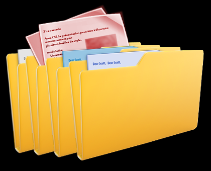
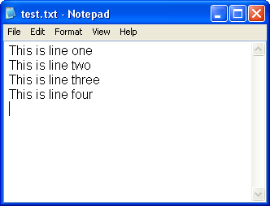

EE1021 Programming for Engineers - Lecture 10
open(filename, mode) and the modes 'r', 'w', 'a', 'r+', 'b'read(), readline(), readlines(), and line-by-line iterationwrite() and automate closing with the with statementsplit(), strip(), and rstrip(), and process CSV files with the csv moduletry/except and work with binary files and portable pathsLast week
Today
C:\Desktop\ta5_code\test_file.txttxt, exe, mp3, avi, jpg).
'\n'), usually hidden by most text editors.
open() returns a file object.open(filename, mode)
filename: an address of a file.mode:
'w' - write - overwrites (“deletes”) prior data'r' - read'a' - append - adds at end of prior data'r+' - opens the file to read and write'b' appended to the mode opens the file in binary mode>>> f = open('test_file.txt', 'r') # returns a file object
>>> s = f.read() # reads the entire file, returns its contents as a string
>>> print(s)
This is a file
>>> f.close() # releases the file lock, frees resourcesIn case the file is located in a different directory, use the full path:
The for loop is used to read line after line from a file object:
f.read() - reads an entire file as a single stringf.readline() - reads the next line as a stringf.readlines() - reads all remaining lines as a list of stringsread() twice from the same file, or loop twice (with for) over the same file.f.close() to free up resources.'\n' represents the new line character:splitsplit method splits a string into tokens using a delimiter, and returns a list of strings.Ankara
Istanbul
Izmir
Bursastrip & rstripUse strip to remove unwanted characters from both sides of the string:
The string method rstrip() can be used to get rid of trailing newlines:
Use f.write(str):
# open a file (or create it if no such file exists)
f = open('test_file_3.txt', 'w')
f.write("This is a test")
# newline
f.write('\n')
# to write a non-string object, first convert it to a string
tpl = ('string', 40)
f.write(str(tpl))
# flush data to the file and close it, unlock file, free resources
f.close()Check the result:
with Keywordwith allows us to automate the closing of a file.with block is executed.students.csv that looks like:Mert,Electronic
Ayse,Computer
Halil,Industrial
Hamit,Electroniccsv Modulecsv specifically for reading and writing CSV files.line.split(',')."Doe, John"), quotes, or newlines.Dictionary implementation
Sorted version
import csv
students = []
with open("students.csv") as file:
lines = csv.reader(file)
for name, major in lines:
students.append({"name": name,
"major": major})
def get_name(student):
return student["name"]
for student in sorted(students, key=get_name):
print(f"{student['name']} is in {student['major']}")import csv
students = []
with open("students.csv") as file:
lines = csv.reader(file)
for name, major in lines:
students.append({"name": name, "major": major})
for student in sorted(students, key=lambda s: s["name"]):
print(f"{student['name']} is in {student['major']}")Output:
Ayse is in Computer
Halil is in Industrial
Hamit is in Electronic
Mert is in ElectronicFileNotFoundError.try and except blocks to handle errors gracefully..txt, .csv, .py): store data as a sequence of characters. The computer encodes these characters (e.g., UTF-8, ASCII)..dat, .jpg, .mp3, .exe): store data as a sequence of bytes (0s and 1s). There is no character encoding.'r'), Python will try to decode the bytes as text and crash or give garbage output.'rb': read binary'wb': write binaryWhen working with binary files, we read and write bytes objects, not strings.
# We want to generate a voltage ramp from 0V to 5V.
# In our 8-bit system, that means numbers from 0 to 255.
# Create a list of integers representing voltage levels.
# This represents one 'cycle' of a sawtooth wave.
signal_points = [0, 50, 100, 150, 200, 255, 0, 50, 100, 150, 200, 255]
# Convert the list of integers into raw bytes
binary_data = bytes(signal_points)
print(f"Signal ready: {list(binary_data)}")
# Save to a binary file ('wb') to simulate loading it into the device memory
with open("waveform.dat", "wb") as f:
f.write(binary_data)
print("Waveform saved to waveform.dat")Let’s write a script that reads the binary file and “plots” it to the screen using simple text bars.
# Read the raw binary data from the 'instrument'
with open("waveform.dat", "rb") as f:
data = f.read()
print("--- REPLAYING SIGNAL ---")
# Iterate through every byte (voltage sample)
for sample in data:
# 'sample' is automatically an integer (0-255)
# Calculate real voltage (scale 0-255 to 0V-5V)
real_voltage = (sample / 255) * 5.0
# Create a simple visual bar graph
bar_graph = "#" * (sample // 10)
print(f"Data: {sample:3d} | Voltage: {real_voltage:.2f}V | {bar_graph}")C:\Users\Student\Project\data.txt (Windows) or /home/student/project/data.txt (Mac/Linux).data.txt (same folder) or folder/data.txt (subfolder).import os
# Absolute path (hardcoded - avoid this!)
# This will crash if you move the script to another computer
abs_path = "C:/Users/Basri/Documents/Project/data.txt"
# Relative path (portable - preferred)
# Looks for 'data.txt' in the same folder as the script
rel_path = "data.txt"
print(f"Current Working Directory: {os.getcwd()}")
# Best practice: build paths dynamically.
# This works on Windows, Mac, and Linux automatically.
full_path = os.path.join(os.getcwd(), "data.txt")open(filename, mode) returns a file object; modes 'r', 'w', 'a', 'r+', and binary 'b' control access.read(), readline(), readlines(), or by iterating the file object line by line.write(); convert non-string objects with str() first.with statement closes files automatically - prefer it over manual close().split(), clean them with strip()/rstrip(), and use the csv module for real CSV data.try/except FileNotFoundError, use binary modes for non-text data, and prefer relative paths for portability.